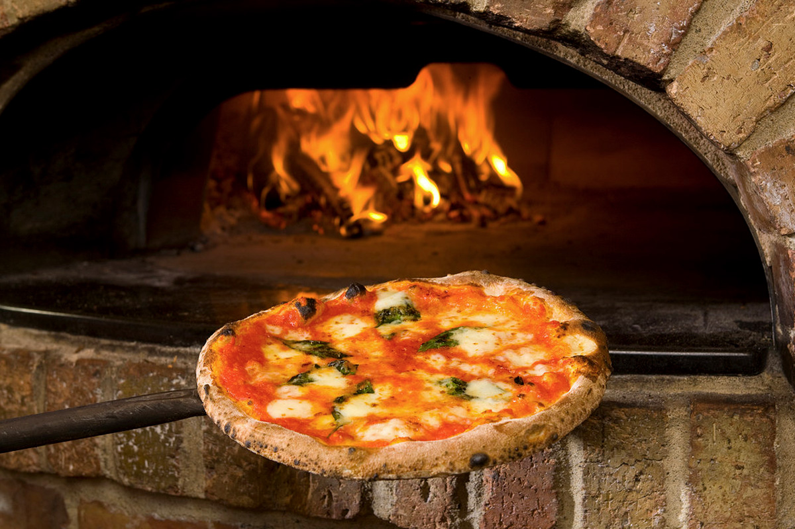
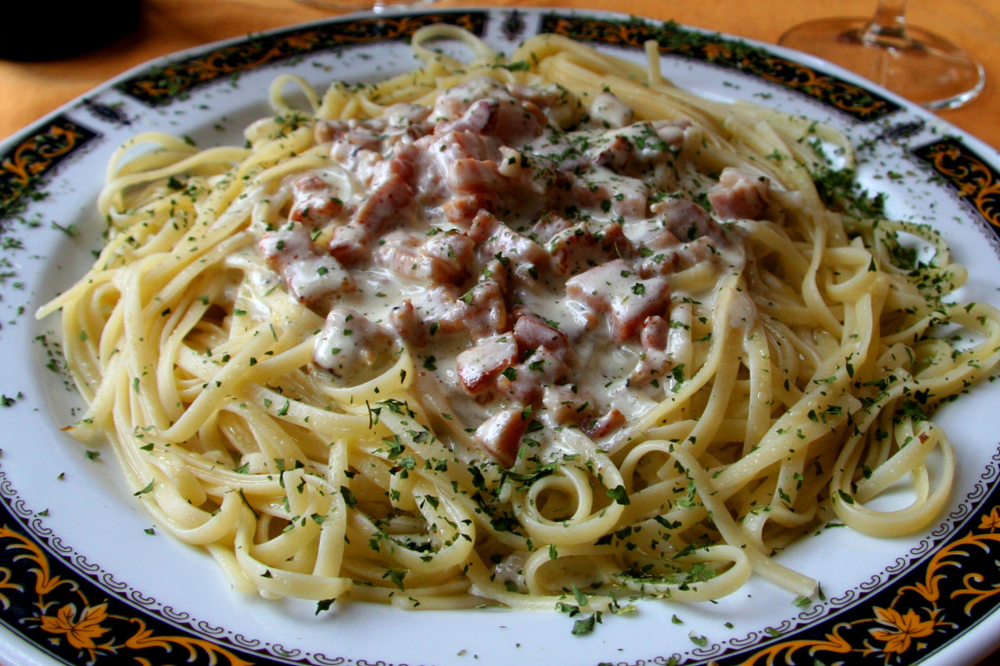
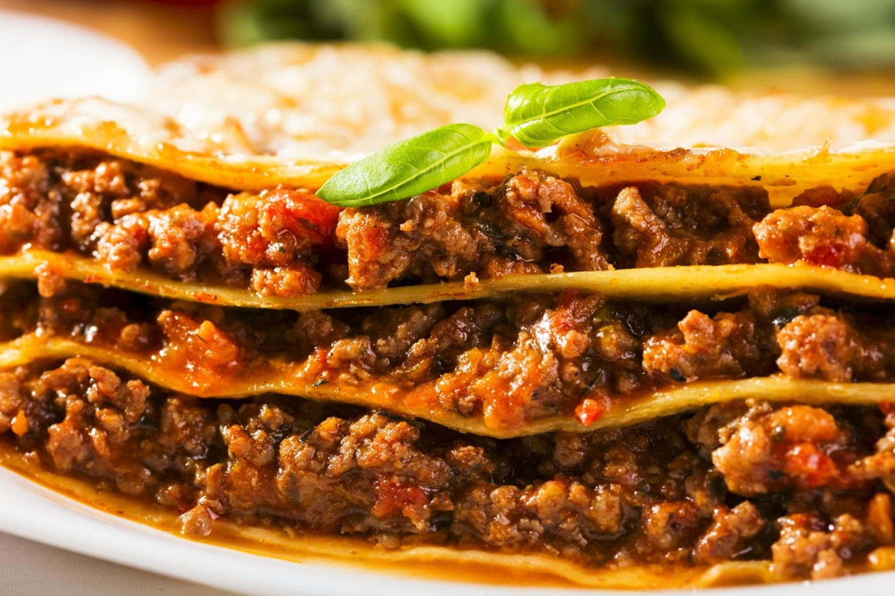
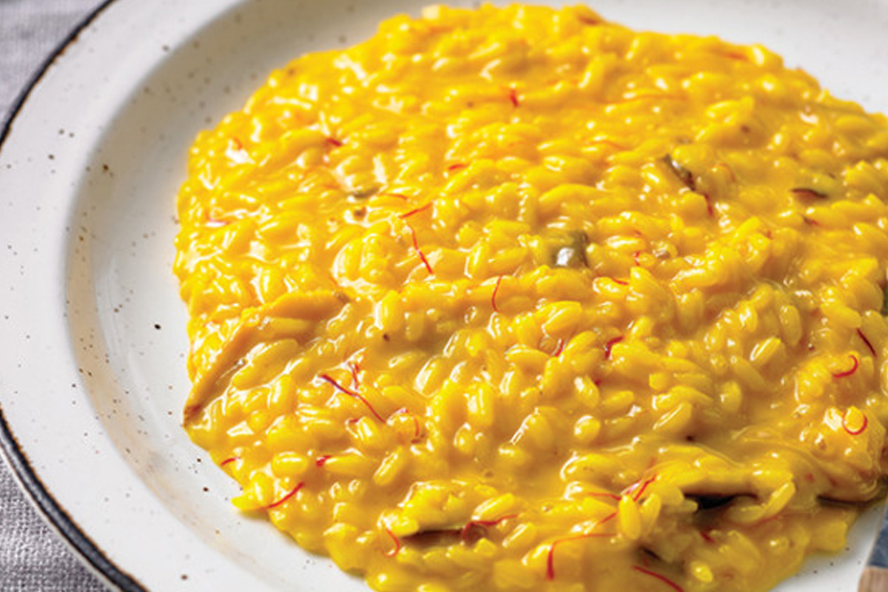

____
Традиционная еда
Итальянская пицца — настоящая «правильная» итальянская пицца выпекается в соответствии со строгими правилами и обязательно в дровяной печи. Пиццерии с такой печью обычно имеют вывеску «Forno» или «Forno a legna».

Итальянская паста — Паста в Италии по праву считается королевой стола (потребление этих макаронных изделий – 27 кг на человека в год!).

Лазанья — Лазанья по сути та же паста. Широкие и тонкие листы пасты (теста) выкладываются слоями, которые перемежаются начинкой на основе мясного фарша, соуса и сыра. Затем все это запекают в духовке.

Ризотто — это рис круглых сортов, приготовленный в бульоне до кремообразной консистенции. Среди остальных блюд итальянской кухни относительный новичок, известный только с XIX века.

____